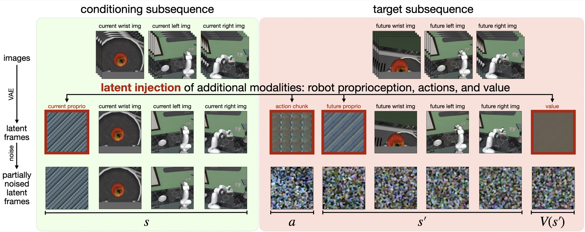
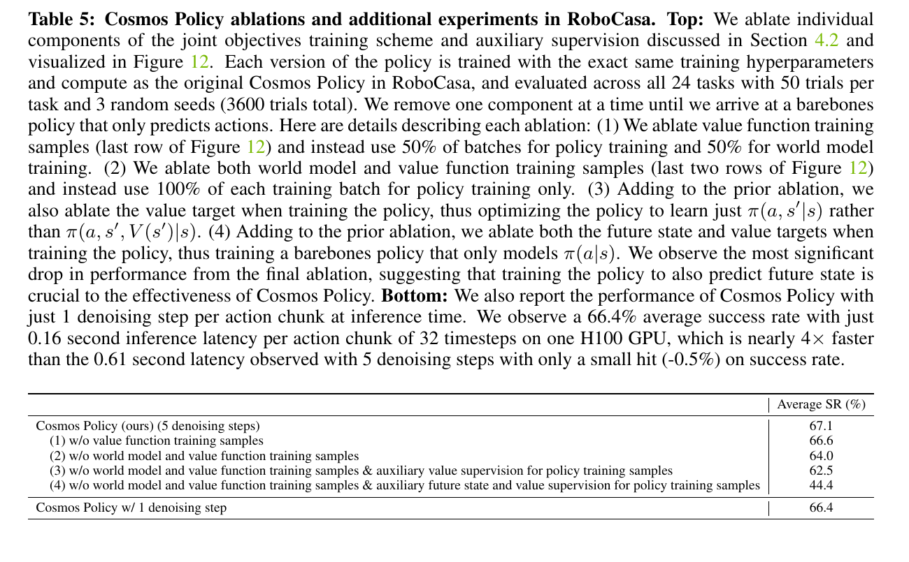

Cosmos Policy: How a Video Model Outputs Actions
Cosmos is NVIDIA's world-model platform for Physical AI. Cosmos Policy takes the Cosmos-Predict2 Video2World backbone and fine-tunes it so selected video-latent slots mean action, future observation, and value. The model still denoises latent tensors; training data and decoding rules change what some tensors mean.
The central question is simple. Cosmos-Predict2 was built to predict future video. Cosmos Policy asks whether the same tensor interface can also carry robot control variables.
The answer in the paper is to keep the video model's shape contract and change the sequence stored inside it.

Start From The Tensor
A video diffusion model emits latent tensors. When those tensors pass through a video VAE decoder, they become image frames. The tensors do not carry a fixed semantic label by themselves. Their meaning comes from the training target and the way the output is read.
Cosmos-Predict2 starts with a video sequence interface:
current observation
-> future video latents
-> video decoder
-> future framesCosmos Policy keeps the latent-frame interface and changes the slots:
current observation
-> action chunk
-> future observation
-> valueThis is the technical reason a video model can output actions. The network is still producing tensors with the expected shape. Fine-tuning teaches the model that some tensor slots now correspond to robot actions and scalar values.
The Slot Assignment
Image observations enter normally. The video VAE encodes each camera observation into video latent frames. Robot variables are handled differently. Proprioception, action chunks, and scalar values are normalized, repeated across a video-latent-shaped volume, and inserted into reserved slots.
\(z(o_t)\) is the video latent for the current observation. \(\phi_a\) maps an action chunk into a video-latent-shaped slot. \(\phi_v\) maps a scalar value into the same shape family. After denoising, action and value extraction runs the reverse operation: average over the repeated volume, then un-normalize back to the original action or value scale.

The method spends extra representation capacity to preserve compatibility with the pretrained video backbone. A low-dimensional action vector becomes an image-shaped latent slot. The gain is that the transformer and diffusion objective remain close to the original video model.
Diffusion Learns The Interface
During training, the model sees many clean state -> action -> future -> value trajectories. It deliberately corrupts those trajectories with noise, then learns to restore them under the current state. At inference time, the unknown slots start as noise, and the denoising process turns them into one plausible action, future, and value sample.
The clean sequence \(x_0\) is the robot trajectory represented as latent slots. The forward process adds Gaussian noise. The denoiser learns to recover the clean sequence under a task condition and a mask:
The mask is important. It marks which slots are known inputs and which slots must be predicted. With the current state visible and action/future/value hidden, the same denoising model becomes a policy. With state and action visible, it becomes a world model. With state, action, and future visible, it becomes a value estimator.
Why The Paper Needs Value
A direct policy samples an action chunk and executes it. The planning version samples multiple candidate action chunks, predicts the future state for each candidate, estimates the value of each future, and executes the action with the highest predicted value.
This is where Cosmos Policy moves from video prediction toward a control-oriented world model. The future is used for action selection. The model predicts an action, predicts what that action will lead to, then scores the predicted future.
Evidence And Boundary
The paper reports strong direct-policy results on LIBERO, RoboCasa, and ALOHA. The more useful mechanism check is the RoboCasa ablation. Removing the future-state and value auxiliary targets drops average success from 67.1% to 44.4%. That row says the future/value slots are contributing to action learning.

The result supports a specific claim: a pretrained video diffusion model can become a strong manipulation policy when robot actions, future observations, and values are represented inside its native latent sequence.
The result leaves three questions open. First, the full best-of-N planning setup is expensive; the paper reports about 4.9 seconds on 8 H100 GPUs in the ALOHA planning setting. Second, planning needs rollout data so the world model and value model see failures beyond demonstrations. Third, repeating actions and scalar values across a video-latent volume preserves compatibility, but it is not obviously the most efficient representation for control.
Cosmos Policy is useful because it makes the interface problem explicit. A video world model becomes relevant to robotics only after action, future, and value enter the same object that the model can train on and sample from.
Sources
- NVIDIA Cosmos, NVIDIA's world foundation model platform for Physical AI.
- Cosmos Policy: Fine-Tuning Video Models for Visuomotor Control and Planning, Kim et al., arXiv 2026.
- Cosmos Policy project page, NVIDIA Research.
- NVlabs/cosmos-policy, released code, models, and training data references.